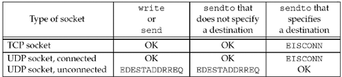

| [ Team LiB ] |
|
8.11 connect Function with UDPWe mentioned at the end of Section 8.9 that an asynchronous error is not returned on a UDP socket unless the socket has been connected. Indeed, we are able to call connect (Section 4.3) for a UDP socket. But this does not result in anything like a TCP connection: There is no three-way handshake. Instead, the kernel just checks for any immediate errors (e.g., an obviously unreachable destination), records the IP address and port number of the peer (from the socket address structure passed to connect), and returns immediately to the calling process.
With this capability, we must now distinguish between
With a connected UDP socket, three things change, compared to the default unconnected UDP socket:
Figure 8.14 summarizes the first point in the list with respect to 4.4BSD. Figure 8.14. TCP and UDP sockets: can a destination protocol address be specified?
Figure 8.15 summarizes the three points that we made about a connected UDP socket. Figure 8.15. Connected UDP socket.
The application calls connect, specifying the IP address and port number of its peer. It then uses read and write to exchange data with the peer. Datagrams arriving from any other IP address or port (which we show as "???" in Figure 8.15) are not passed to the connected socket because either the source IP address or source UDP port does not match the protocol address to which the socket is connected. These datagrams could be delivered to some other UDP socket on the host. If there is no other matching socket for the arriving datagram, UDP will discard it and generate an ICMP "port unreachable" error. In summary, we can say that a UDP client or server can call connect only if that process uses the UDP socket to communicate with exactly one peer. Normally, it is a UDP client that calls connect, but there are applications in which the UDP server communicates with a single client for a long duration (e.g., TFTP); in this case, both the client and server can call connect. The DNS provides another example, as shown in Figure 8.16. Figure 8.16. Example of DNS clients and servers and the connect function.
A DNS client can be configured to use one or more servers, normally by listing the IP addresses of the servers in the file /etc/resolv.conf. If a single server is listed (the leftmost box in the figure), the client can call connect, but if multiple servers are listed (the second box from the right in the figure), the client cannot call connect. Also, a DNS server normally handles any client request, so the servers cannot call connect. Calling connect Multiple Times for a UDP SocketA process with a connected UDP socket can call connect again for that socket for one of two reasons:
The first case, specifying a new peer for a connected UDP socket, differs from the use of connect with a TCP socket: connect can be called only one time for a TCP socket. To unconnect a UDP socket, we call connect but set the family member of the socket address structure (sin_family for IPv4 or sin6_family for IPv6) to AF_UNSPEC. This might return an error of EAFNOSUPPORT (p. 736 of TCPv2), but that is acceptable. It is the process of calling connect on an already connected UDP socket that causes the socket to become unconnected (pp. 787–788 of TCPv2).
PerformanceWhen an application calls sendto on an unconnected UDP socket, Berkeley-derived kernels temporarily connect the socket, send the datagram, and then unconnect the socket (pp. 762–763 of TCPv2). Calling sendto for two datagrams on an unconnected UDP socket then involves the following six steps by the kernel:
When the application knows it will be sending multiple datagrams to the same peer, it is more efficient to connect the socket explicitly. Calling connect and then calling write two times involves the following steps by the kernel:
In this case, the kernel copies only the socket address structure containing the destination IP address and port one time, versus two times when sendto is called twice. [Partridge and Pink 1993] note that the temporary connecting of an unconnected UDP socket accounts for nearly one-third of the cost of each UDP transmission. |
| [ Team LiB ] |
|